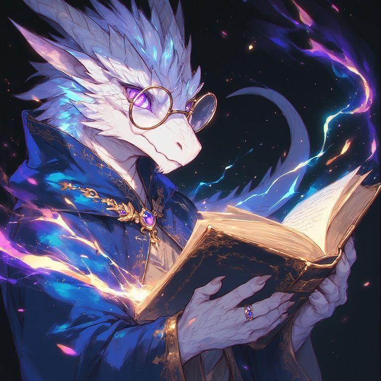

0001 – Valerion Horatius
Weiß geschuppter Drache mit blauer Biolumineszenz, violetten Augen und runder Goldbrille. Forscher, Resonanztechniker und Besitzer von 2004 – Valerions Haus. Seine große Rückennarbe reagiert auf 3003, und seine Vergangenheit ist eng mit Erinnerungskristallen, dunkler Energie und Leere-Entitäten verbunden.
Wichtigste Beziehung
Olga Kirovsky: Enge Freundin, Forschungspartnerin, emotionale Stütze.